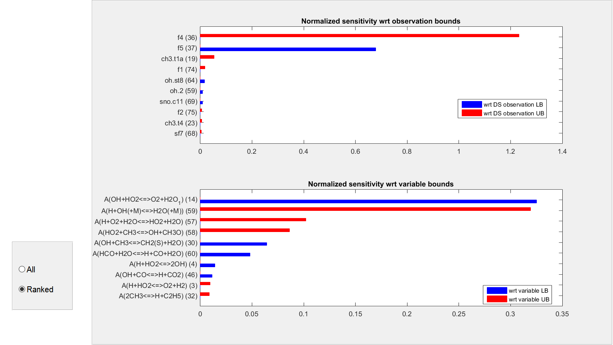

Contents
Load GRI-Mech 3.0 dataset
[~,~,experimentData] = xlsread('GRIMech_expdata.xls');
s = load('GRIMech_modeldata.mat');
modelData = s.GRIMech_modeldata;
dsGRI = startDataset('GRI Mech 3.0');
dsGRI = addData(dsGRI,experimentData,modelData);
Check consistency
dsGRI.isConsistent;
=======================================================
Searching inner bound...
=======================================================
=======================================================
Calculating outer bound...
=======================================================
The calculation is done
Consistency LB: -0.37248
Consistency UB: -0.29163
The dataset is inconsistent
Plot sensitivity
dsGRI.plotConsistencySensitivity

Remove Top 2
dsGRI.deleteUnit([36,37])
Recheck consistency
dsGRI.isConsistent
=======================================================
Searching inner bound...
=======================================================
=======================================================
Calculating outer bound...
=======================================================
The calculation is done
Consistency LB: 0.12642
Consistency UB: 0.23518
The dataset is consistent
ans =
1
What can explored with a consistent dataset?
- Posterior bounds on Model variables
- Posterior bounds on dataset QOIs (prediction)
- Posterior bounds on unmeasured QOIs
- Examine distributions and correlations
- Model optimization
Posterior bounds on Model variables
vars = dsGRI.Variables;
nVars = vars.Length;
Opt = B2BDC.B2Bdataset.Option({'Display',false});
for i1 = 1:2
xi = generateModel(vars.Values(i1));
dsGRI.setQOI2predict(xi);
dsGRI.predictQOI(Opt);
bndsPosterior(i1) = dsGRI.QOIRange;
end